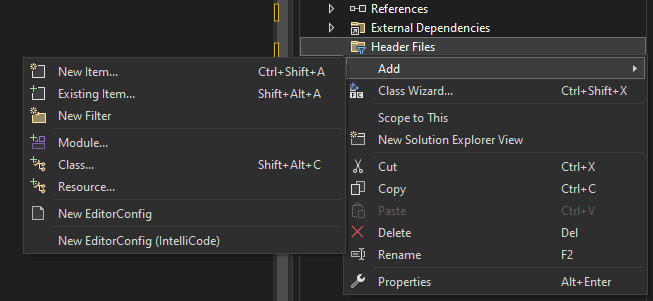
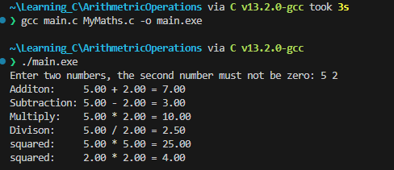
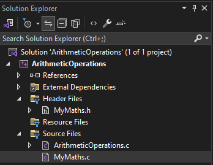

Lab 3: Arithmetic Operations
Task 1
Write a program with functions to perform basic arithmetic operations (addition, subtraction, multiplication, and division). Each operation should be in its own function.
-
Open a new folder called
Arthimetic Operations -
Create a new header file by following the images below, and call the file
MyMaths.h,MyMaths.c, andmain.c:- 
-
Next create a Guard for the new header file:
#pragma once #ifndef MYMATHS_H #define MYMATHS_H #endif -
Now we are ready to place declare for reference various arithemtic functions. Add the following functions where the parameters are
floats:- add
- subtract
- multiply
- divide
- square
Possible Solution...
#pragma once #ifndef MYMATHS_H #define MYMATHS_H #include <stdio.h> float add(float a, float b); float subtract(float a, float b); float multiply(float a, float b); float divide(float a, float b); float square(float a); #endif // End of Guard -
To provide the actual code for each of these prototype functions in
MyMaths.h, modify theMyMaths.cfile. -
Modify the content on
MyMaths.cso that itincludestheMyMaths.hfile:Possible Solution...
#include "MyMaths.h" -
Now start to build out the functionality of each of the arthimetic functions you declared in the
MyMaths.hfile:- add
- subtract
- multiply
- divide
- square
Possible Solution
#include "MyMaths.h" float add(float a, float b) { return a + b; } float subtract(float a, float b) { return a - b; } float multiply(float a, float b) { return a*b; } float divide(float a, float b) { return a/b; } float square(float a) { return a*a; } -
Go back to
main.cand modify the contents so that itincludesMyMaths.hand remove the code in side themain()block (keeping thereturn 0;), do this now:Possible Solution
#include "MyMaths.h" int main() { return 0; } -
Declare two
floats asnum1andnum2initialising them with the value0.0finside ofmain():Possible Solution
int main(){ float num1 = 0.0f, num2 = 0.0f; return 0; } -
Using
printf, request the user to enter two numbers, where second number that must be greater than zero. Then usingscanfread what the user inputted and assign those two numbers tonum1andnum2.Possible Solution
int main(){ float num1 = 0.0f, num2 = 0.0f; printf("Enter two numbers, the second number must not be zero: "); scanf("%f %f", &num1, &num2); return 0; } -
Reproducing the following format perform each of the arithmetic operations on the supplied numbers, you will need to do square twice, one for each number:
printf("<Arithemtic Operation>: %.2f + %.2f = %.2f\n", num1, num2, arithmeticOpeation(num1, num2));Possible Solution
int main(){ float num1 = 0.0f, num2 = 0.0f; printf("Enter two numbers, the second number must not be zero: "); scanf("%f %f", &num1, &num2); printf("Additon: %.2f + %.2f = %.2f\n", num1, num2, add(num1, num2)); printf("Subtraction: %.2f - %.2f = %.2f\n", num1, num2, subtract(num1, num2)); printf("Multiply: %.2f * %.2f = %.2f\n", num1, num2, multiply(num1, num2)); printf("Divison: %.2f / %.2f = %.2f\n", num1, num2, divide(num1, num2)); printf("squared: %.2f * %.2f = %.2f\n", num1, num1, square(num1)); printf("squared: %.2f * %.2f = %.2f\n", num2, num2, square(num2)); return 0; -
Output:

Task 2
Let's further modify the solution so we can do some meaningful programming. In this task you will create a temperature conversion tool.
- Create a new Header file and c file in the respective locations called:
TemperatureConversion.hTemperatureConversion.c

-
Open
TemperatureConversion.hand add the guard for this file.Possible Solution...
#pragma once #ifndef TEMPEATURECONVERSION_H #define TEMPEATURECONVERSION_H #endif -
Inside the block ifndef block define the functions to convert to and from fahrehnhiet, celcius and kelvin, so there should be six functions altogether. The functions should return a
floatand take only onefloatas an argument:Possible Solution...
#pragma once #ifndef TEMPEATURECONVERSION_H #define TEMPEATURECONVERSION_H double fahrenheitToCelcius(double fahr); double fahrenheitToKelvin(double kel); double celciusToFahrenheit(double cel); double celciusToKelvin(double cel); double kelvinToCelcius(double kel); double kelvinToFahrenheit(double kel); #endif // TEMPEATURECONVERSION_H -
Next build up the
TempeatureConversion.cfile:-
include the
TemperatureConversion.hfile -
use the following formulas to convert between each temperature:
-
Fahrentheit to:
-
\( Celcius = \left(\frac{5.0}{9.0}\right) \cdot (fahr - 32.0)\)
-
\(Kelvin = \left(\frac{(fahr -32.0)}{1.79999999}\right) + 273.15\)
-
-
Celcius to:
-
\( Fahrenheit = \left(cel \cdot \left(\frac{9.0}{5.0}\right)\right) +32.0\)
-
\( Kelvin = cel + 273.15\)
-
-
Kelvin to:
-
\( Celcius = kel - 273.15 \)
-
\(Fahrenheit = ((kel - 273.15) * 1.8) + 32.00 \)
-
-
Note:
Remember that the function are defined in the
TemperatureConversion.h.Possible Solution...
#include "TemperatureConversion.h" double fahrenheitToCelcius(double fahr) { return (5.0 / 9.0) * (fahr - 32.0); } double fahrenheitToKelvin(double fahr){ return ((fahr - 32) / 1.79999999) + 273.15; } double celciusToFahrenheit(double cel){ return (cel * (9.0 / 5.0))+ 32.0 ; } double celciusToKelvin(double cel) { return (cel + 273.15); } double kelvinToCelcius(double kel) { return (kel - 273.15 ); } double kelvinToFahrenheit(double kel) { return ((kel - 273.15) * 1.8) + 32.00; } -
-
Navigate to
main.cand include theTemperatureConversion.hfile underneath#include <stdio.h>line. -
Continuing lets comment out the previously written code for future reference incase we need it. Above the
float num1 = 0.0f, num2 = 0.0fline add a/*place the proceeding*/on the last line of code in this block above thereturn 0; -
To use our temperature functions, reproduce the following line and then replicate for the other temperature functions. I would suggest starting in the whitespace between
int main(){and the/*line:float num1 = 100.0f; printf("Fahrenheit to Ceclius: %.2fF -> %.2fC \n", num1, fahrenheitToCelcius(num1));Note:
Remember that the functions you have implemented return a double, so the second format specifier ,
%.2fwill be the returned value.Possible Solution
... int main(){ float num1 = 100.0f; printf("Fahrenheit to Ceclius: %.2fF -> %.2fC \n", num1, fahrenheitToCelcius(num1)); printf("Fahrenheit to Kelvin: %.2fF -> %.2fK \n", num1, fahrenheitToKelvin(num1)); printf("Ceclius to Fahrenheit: %.2fC -> %.2fF \n", num1, celciusToFahrenheit(num1)); printf("Ceclius to Kelvin: %.2fC -> %.2fK \n", num1, celciusToKelvin(num1)); printf("Kelvin to Farhenheit: %.2fK -> %.2fF \n", num1, kelvinToFahrenheit(num1)); printf("Kelvin to Ceclius: %.2fK -> %.2fC \n", num1, kelvinToCelcius(num1)); /* ... */ return 0; }Note:
The
...means and rest of the code, that I have ommitted for readibility -
Run the code and you should see the following output:

Congratulations you reached the end of the guided part of the lab, now try and do point 21 below.
-
If you get to here try and modify the code so that you can convert from above temperature units to Rankine and vice versa, the following formulas will help you:
-
Rankine to:
- \(Celcius = (R − 491.67) \cdot \left(\frac{5}{9}\right) \)
- \(Fahrenheit = R − 459.67\)
- \(Kelvin = R \cdot \left(\frac{5}{9}\right)\)
-
... to Rankine = :
-
\(Celcius \cdot \left(\frac{9}{5}\right) + 491.67\)
-
\(Fahrenheit + 459.67\)
-
\(Kelvin * 1.8\)
-
Output...

Possible Solutions...
-
TemperatureConversion.c
... double fahrenheitToRankine(double fahr) { return fahr + 459.67; } double celciusToRankine(double cel) { return (cel * (9 / 5) + 491.67); } double kelvinToRankine(double kel){ return kel * 1.8; } double rankineToFahrenheit(double ran) { return ran - 459.67; } double rankineToCelcius(double ran){ return (ran - 491.67) * (5 / 9); } double rankineToKelvin(double ran){ return ran * (9 / 5); } -
TemperatureConversion.h
... double fahrenheitToRankine(double fahr); double celciusToRankine(double cel); double kelvinToRankine(double kel); double rankineToFahrenheit(double ran) ; double rankineToCelcius(double ran); double rankineToKelvin(double ran); -
ArithmeticOperations.c
... printf("Fahrenheit to Rankine: %.2fF -> %.2fR \n", num1, fahrenheitToRankine(num1)); ... printf("Ceclius to Rankine: %.2fC -> %.2fR \n", num1, celciusToRankine(num1)) ... printf("Kelvin to Rankine: %.2fK -> %.2fR \n", num1, kelvinToRankine(num1)); printf("Rankine to Farhenheit: %.2fR -> %.2fF \n", num1, rankineToFahrenheit(num1)); printf("Rankine to Ceclius: %.2fR -> %.2fC \n", num1, rankineToCelcius(num1)); printf("Rankine to Kelvin: %.2fR -> %.2fK \n", num1, rankineToKelvin(num1));
-